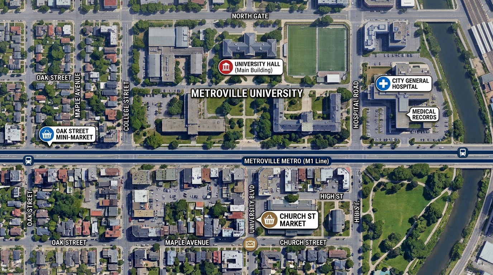

لغة الإشارة للجميع
تكلّم بيديك.
ويفهمك الجميع.
استكشف الخريطة، واضغط على أي نقطة لتشاهد الإشارة، ثم اسأل Signy عن أي شيء.
ابدأ الاستكشاف ↓خريطة الإشارات التفاعلية
اضغط على النقطة المضيئة لمشاهدة فيديو الإشارة.

قابل Signy
مساعدك الودود في لغة الإشارة.
Signyمساعد لغة الإشارة